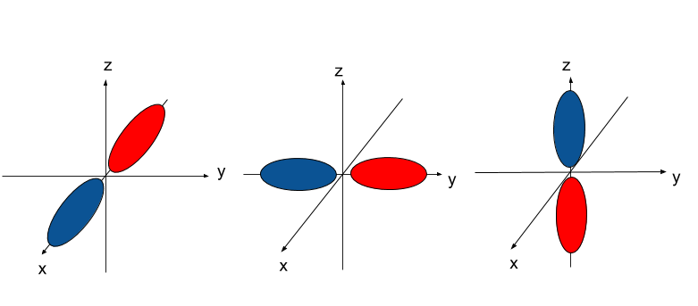

The above image is the Bohr diagram for Li, lithium. The circles around the nucleus are orbitals. There are two things to take note of:
- There are two electrons in the innermost orbital.
- There is one electron in the outermost, valence orbital.
Let's do a quick check to see if this is correct. Lithium is element number 3. This means that it has 3 protons, 3 neutrons, and 3 electrons. Additionally, Lithium is a group 1 element, which means that it has only 1 electron in its valence shell. In total, this means that there is 1 electron in the valence shell and 2 in the innermost. Check.
Something else to take note of: the orbitals in the diagram are perfect circles. In reality, the orbitals look like this:

Don't worry, they look intimidating but aren't actually very complicated. The above picture is a collection of atomic orbitals, which are the orbitals that exist for each atom. These orbitals are what orbitals actually look like in reality; the Bohr model was just a simplification to explain orbitals. Let's try to understand them.
The Bohr model stated that electrons orbit the nucleus at distinct radii called orbitals. In most cases, the Bohr model is a simplified model. In reality, the orbitals are not all circular but are 3D shapes, and instead of orbiting around, they just exist somewhere in their orbitals.
The atomic orbitals above are a mathematical function that describe the probability of where an electron is at a given time. Each of those orbitals above are where electrons will be 99.99% of the time. They're not confined to their orbitals, but are just in there most of the time. Think of an electron as your introverted friend, and the orbital as his room. Your friend is not confined to his room, but 99.99% of the time you'll find him there.
The mathematical calculation for the shapes of the orbitals is described by Schrodinger's Equation
At this point, nobody expects you to be able to solve, or read, the Schrodinger's Equation. The equation itself is significant because the solutions to the equation give us the shapes of the orbitals.
Since we now know that orbitals are not just round circles around the nucleus but are 3D shapes, we can give them labels for the different shapes. These labels will be s, p, d, and f.
s-orbitals are spherical.

p-orbitals are dumb-bell shaped. They come in sets of 3, labeled `p_x , p_y`, and `p_z.` The names are based off the axis that they're in line with: the `p_x` is in line with the x-axis, `p_y` in line with the y-axis, and `p_z` the z-axis.

d-orbitals come in sets of 5, with 4 of them cloverleaf shaped and one that looks like a combination of a p-orbital and a donut. I like to call this the donut orbital. d-orbitals are labeled based off the plane that they lay. The `d_(xy)` lays in the xy plane, `d_(xz)` on the xz plane, and `d_(yz)` on the yz plane. These three orbitals also lay between the axises i.e none of them are directly on top of the x, y, and z axises. The `d_(x^2-y^2)` lays on the xy plane, the same way the `d_(xy)` does, but is in line with the x and y axises. The `d_(z^2)` is in axis with the z-axis and is the weird one with the donut.
If you were asked to identify which orbital any given s, p, or d orbital is, you can simply remember the few, and very logical, rules:
1. s-orbitals are spherical.
2. p-orbitals are dumb-bell shaped, come in sets of 3, and are named according to which axis they're in line with.
3. d-orbitals come in sets of 5, with 4 of them cloverleaf shaped and 1 that has a donut. They are named according to which plane they lay on (`d_(xy),d_(xz),d_(yz)`), and what axis they are in line with (`d_(x^2-y^2), d_(z^2)`)
f-orbitals are difficult to describe and are not likely to be seen very often at this level, so they won't be covered. Try looking at pictures of different s, p, and d orbitals and practice labeling them!
There are several rules and principles we have to understand before continuing. Some parts of them will make sense immediately, others may require a bit more consideration. Don't worry, by the end of the post all will be clear:
Each orbital can accomodate 2 electrons at max. This goes for all orbitals: a s-orbital can hold the same number of electrons as the `p_x`-orbital which will hold the same as a `d_(z^2)` orbital. No matter how large or different looking the orbitals are, they can never hold more than 2 electrons. Additionally, both electrons within an orbital must have opposite spins.The concept of spin will be examined in the next post on quantum numbers, so don't worry about that part yet.
Recall that in the previous post, we claimed that atoms want 8 valence `e^-` in accordance to the Octet Rule? The Pauli Exclusion Principle explains why it's 8 specific electrons: there are 4 valence orbitals (An s-orbital and 3 p-orbitals) which each hold 2 `e^-`. In order to fill these 4 valence orbitals, an atom needs 8 electrons. This is where the Octet Rule comes from.
Electrons will fill from the orbitals of lowest energy (closest to the nucleus) to the highest aka. the valence shell. In other words, if I had two orbitals A and B, with A at a lower energy level than B, then electrons will always fill up A before filling up B. This will also be cleared up in the next post.
Electrons will occupy orbitals such that the total spin is maximized. In simpler terms, this means that if you're filling a set of orbitals, such as the `p_x`,`p_y`, and `p_z`, then you will fill one electron in each before filling the second electron. Each subshell must be singly filled before any one subshell can be doubly filled. For a visual representation:
The arrows and squares represent electrons and p-orbitals respectively. According to Hund's Rule, when adding 1 electron to the set of orbitals with 1 electron already in the `p_x` , the next electron cannot go into the `p_x` orbital. Instead, it has to go into either the `p_y` or `p_z` . The orbital on the bottom violates Hund's rule because all of the orbitals must be filled with 1 electron before being filled with 2: the `p_x` is filled with 2 electrons before the `p_z` has been filled with any.
In summary, the rules for filling orbitals are:
1. 2 electrons per orbital.
2. Fill from orbitals of lowest energy state to highest energy state.
3. Sets of orbitals belonging to the same block must be filled singly before doubly.
These rules allow us to describe where the electrons of a given atom are. The best way to learn this is through an example:
Write the electron configuration for N, nitrogen. This chart will be of use:
Okay, let's begin. As we know from the atomic number, N has 7 electrons.
The chart on the bottom says that groups 1-2 are the "s-block," groups 3-12 the "d-block," and groups 13-18 the "p-block." Look at where N is on the periodic table. N is part of group 15 and therefore is part of the p-block. You may have to consult a periodic table with the elements written in:
Now we can start filling up the orbitals. According to the Aufbau Principle, we have to fill from the bottom up. 2 electrons go into the lowest energy orbital, the "1s." 2 electrons then go into the next lowest energy level, the "2s." Now we enter the "2p," beginning with B. Since N is 3 elements into the 2p, we fill up 3 electrons into the 2p orbitals. The written form of this is:
N: `1s^2 2s^2 2p^3`
This means that there are 2 electrons in the 1s orbital, 2 electrons in the 2s, and 3 electrons in the 2p orbitals. To make this simpler, here is a list of steps that you can follow:
1. Identify the position of the final valence electron. This is the period number, followed by the type of orbital, and the number of positions into that orbital. For example, silicon's (Si) last valence electron occupies the `3p^2` location. 3 is the period (row), p is the block that Si is in, and `p^2` is the 2nd element in the 3p block.
2. From there, work from the bottom up. The electron configuration builds up the same way everytime. For example:
S: `1s^2 2s^2 2p^6 3s^2 3p^4`
Ca: `1s^2 2s^2 2p^6 3s^2 3p^6 4s^2`
Note that they both start the same way, but the electron configuration from Ca just continues while S's stops. Work up until you hit the position you found in step 1.
Alternatively, you can look at the following periodic table. This should give you a sense of how to write the electron configuration from a periodic table.
Once you know where the s, p, and d blocks are, you should be able to do it with a normal periodic table. Try it yourself and see.
One thing to note is that the d block begins after the 4s block. In other words, the electron configuration after 4s is 3d, as opposed to 4p. The reason behind this will be explained in the next post on quantum numbers.
The best way to do electron configuration is to do a lot of them until the process becomes second nature. Remember to find the position of your last valence electron and simply work from the the top of the periodic table down to your element. Here are a couple to start you off:
#1. Write the electron configuration of Br
Cl is the 5th position in the 3p block, so the configuration will end at `3p^5`. Starting from the top:
Answer: `1s^2 2s^2 2p^6 3s^2 3p^5`
#2. Write the electron configuration for Rh, Rhodium
Rh is the 7th position in the 4d block, making it `4d^7`.
Answer: `1s^2 2s^2 2p^6 3s^2 3p^6 4s^2` 3`d^10 4p^6 5s^2` 4`d^7`
Remember that the d-block is always 1 lower than the s-block e.g `6s^2 5d^10, 4s^2 3d^10`
The electron configuration tells us how the electrons are configured in any given element. For example, the electron configuration of Rh, `1s^2 2s^2 2p^6 3s^2 3p^6 4s^2 3d^10 4p^6 5s^2 4d^7` says that there are 2 electrons in the 4s,2 in the 5s orbital, 7 in the 4d, etc. The exponent indicates how many electrons are in that particular orbital. Also note that the total number of electrons should be equal to the atomic number. If you add up all of the exponents, you should get the atomic number.
You can get away with just memorizing the general electron configurations, but it's more beneficial to understand the logic behind them. The next post on quantum numbers will explain what each part of an atom's electron configuration means. For now, here's a really long electron configuration for fun:
Ir: `1s^2 2s^2 2p^6 3s^2 3p^6 4s^2 3d^(10) 4p^6 5s^2 4d^(10) 5p^6 6s^2 4f^(14) 5d^7`
1. Orbitals are actually complex shapes around the nucleus that electrons can reside within.
2. There are different kinds of orbitals, most notably the s, p, and d orbitals. All of them have different shapes and labels.
3. Each orbital can contain 0, 1, or 2 electrons.
4. Atomic orbitals fill from the lowest energy state aka the orbital closest to the nucleus, to the highest energy state aka the valence orbitals.
5. Electron configurations are a representation of which orbitals electrons are residing in, and how many electrons are in each of those orbitals.